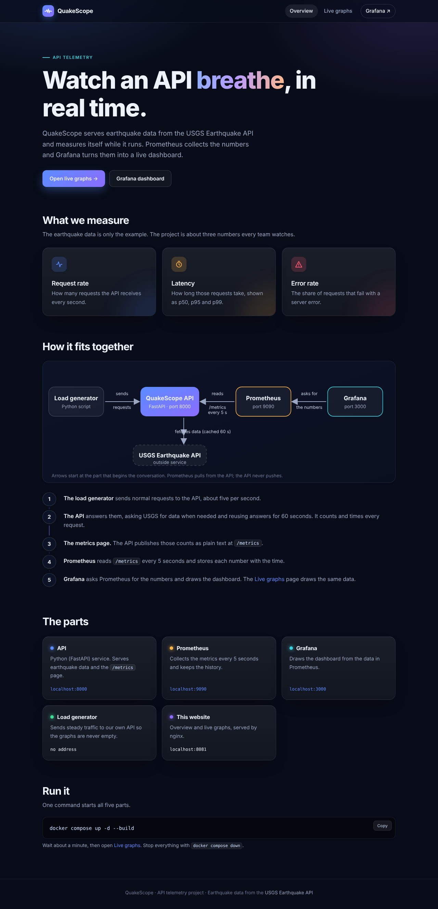
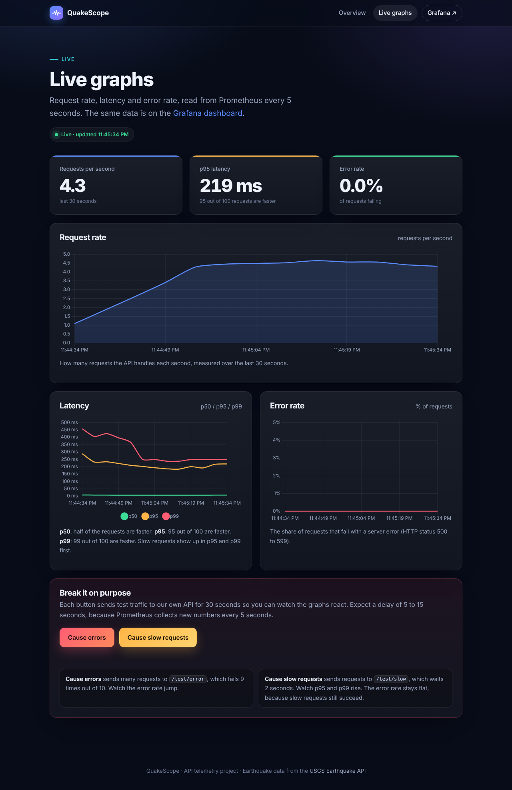
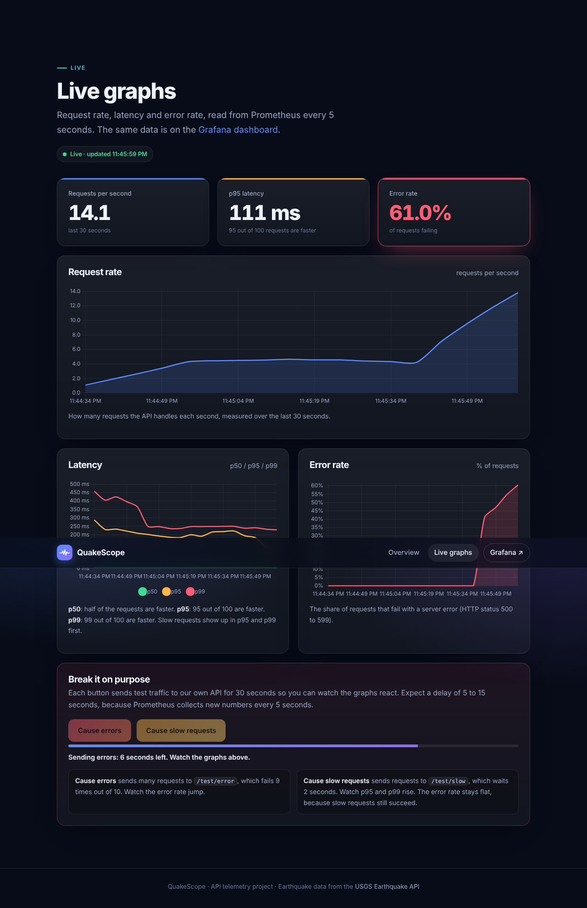
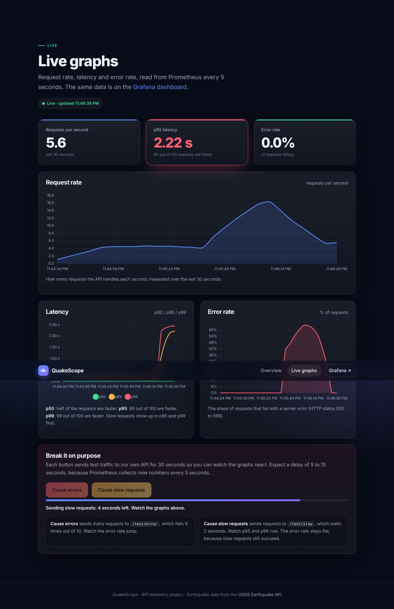

What it does
QuakeScope serves earthquake data from the USGS API, then counts and times every request it answers. Prometheus collects those numbers every 5 seconds and Grafana draws them — the classic RED method: Rate, Errors, Duration.
📈 Request rate
How busy the API is, in requests per second, overall and per endpoint.
⚠️ Error rate
The share of requests failing with a 5xx status, tracked over time.
⏱️ Latency
p50, p95 and p99 — because an average hides the slow requests.
How it fits together
A load generator sends steady traffic so the graphs are never empty. The API answers and publishes its numbers. Prometheus pulls those numbers; the API never pushes.
The path of one request
/earthquakes/recent. A middleware sees it first and starts a stopwatch./metrics./metrics every 5 seconds (a scrape) and stores each value with a timestamp.The live website
A two-page site shows the same data as Grafana, plus buttons that break the API on purpose so you can watch the graphs react.




These are real captures from a test run with generated traffic. The graphs update live only when the full stack is running locally — see “Run it yourself” below.
Run it yourself
Everything starts with one command. You need Docker Desktop.
git clone https://github.com/kotiavanshika-blip/quakescope_IMAP_.git
cd quakescope_IMAP_
docker compose up -d --buildThen open, after about a minute:
| Address | What you see |
|---|---|
localhost:8081 | The website — start here, then open Live graphs |
localhost:3000 | The Grafana dashboard (no login needed) |
localhost:9090/targets | Prometheus — the API should say UP |
localhost:8000/metrics | The raw numbers the API publishes |
Built with
The team
| Member | Role |
|---|---|
| Simran | API developer — endpoints, metrics, cache, tests |
| Janak | Prometheus & Docker — compose, Dockerfiles, config |
| Prachi | Grafana dashboard — data source, panels, PromQL |
| Vanshika | Website, traffic & docs |